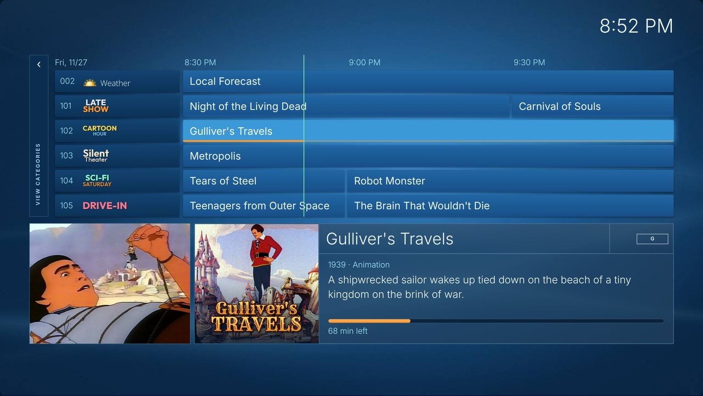
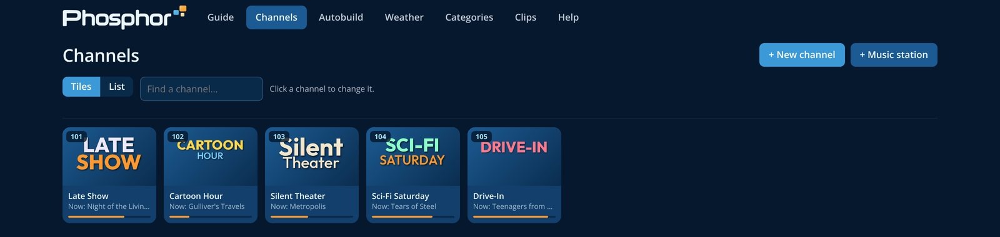
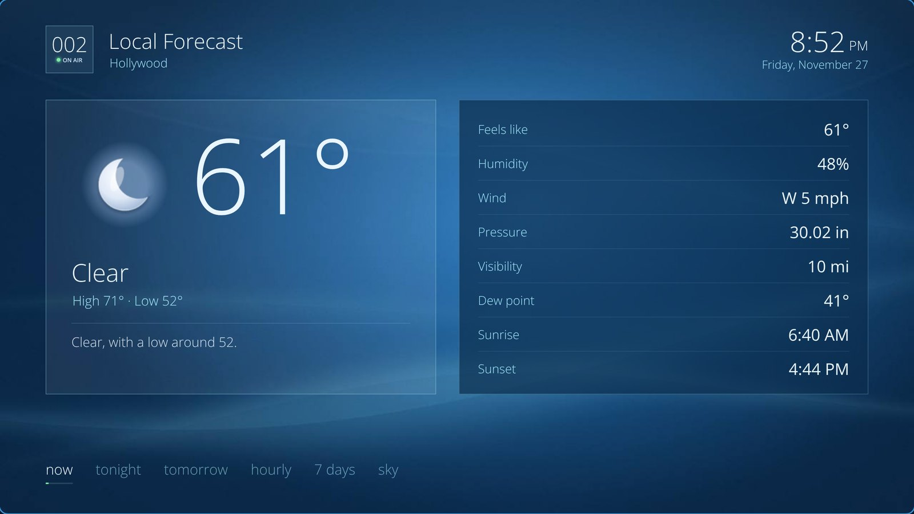
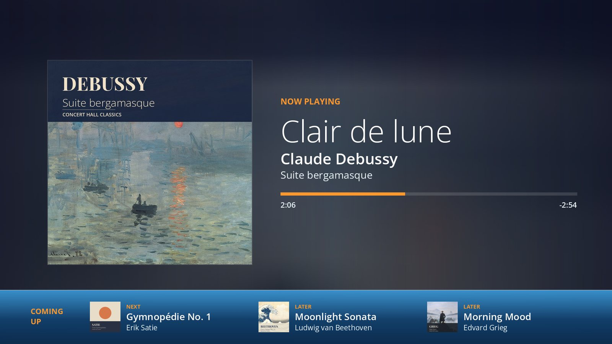

Your library, on the air.
Phosphor turns the shows and movies on your own Jellyfin server into real TV channels, with a program guide, commercial breaks and something always on.


Channel surf like it's 1999
Flip through a full program guide with channel logos, show details and a live preview in the corner. Shows are already in progress when you tune in, just like real TV. Set reminders for later and favorite the channels you love.
Posters, artwork and descriptions come straight from your Jellyfin library, so the guide looks right from the start. Want something different? Give any channel its own logo, or pick the artwork shown for each show.

A whole lineup in one click
Autobuild looks through your library and builds channels for you: sitcoms, dramas, cartoons, movies by decade, holiday channels and more. Each night gets a prime-time lineup with a new episode every week, and the rest of the day fills with reruns.

Commercials, bumpers and station IDs
Add your own vintage commercials and Phosphor fills the time between shows the way TV used to, with "coming up next" cards, station IDs and bumpers, even matching '80s ads to '80s shows.

Your local forecast, on loop
A weather channel with current conditions, the 7-day forecast, live radar and severe weather alerts for your area, set to music from your library. (US only.)

Music stations
Turn your music library into stations that play around the clock, with full-screen album art and what's coming up next.
And a lot more
Everything is set up from your computer, in the Phosphor plugin on your Jellyfin server.
How it works
Phosphor doesn't include any shows or movies. It plays what's already on your server.